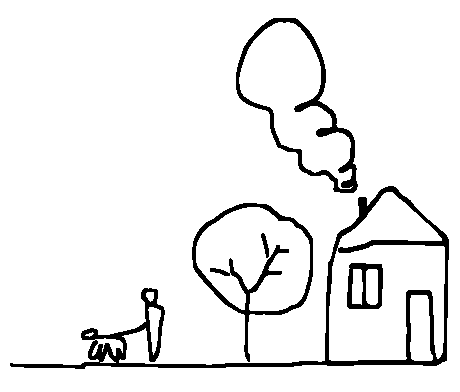
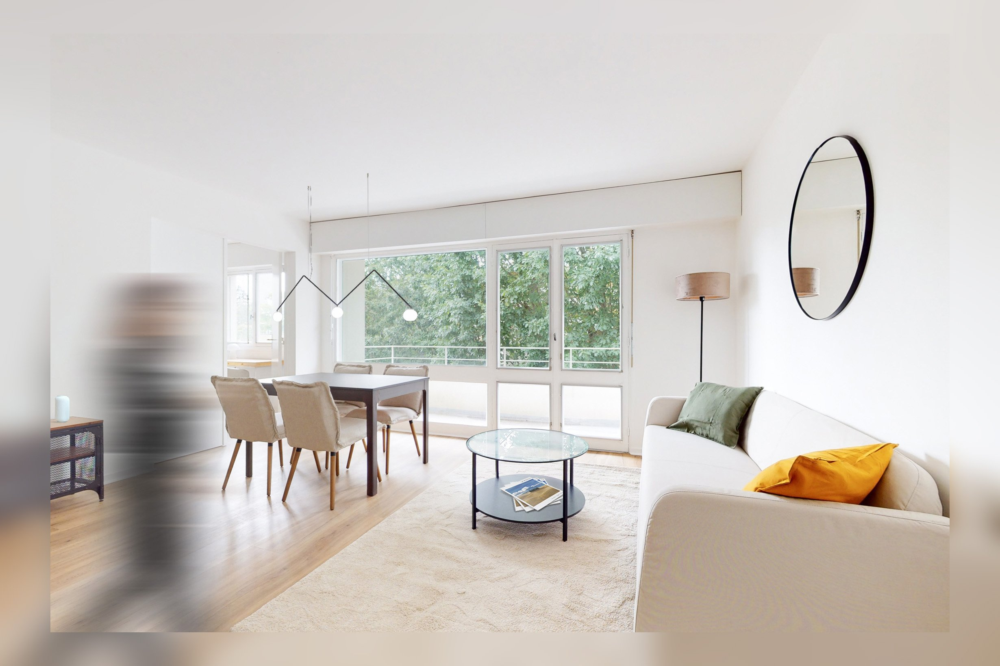
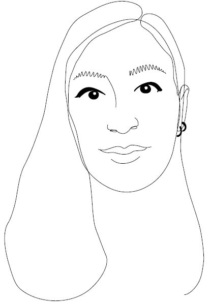

architetto · designer d’interni · roma
interni pensati
per chi li vive.
Progettazione di interni, visualizzazione 3D e arredo su misura: dalla definizione dei bisogni alla progettazione esecutiva.


01 — chi sono

ciao, io sono clara.
Architetto e designer d’interni. Dopo la laurea in Architettura alla Sapienza, Università degli studi di Roma, e alcune esperienze all’estero mi occupo di progettazione di interni, visualizzazione 3D e virtual home staging.
Dalla definizione dei bisogni alla progettazione esecutiva, accompagno il cliente verso un miglioramento garantito dei propri spazi, sia in ambito residenziale che commerciale, prediligendo scelte orientate al benessere dei fruitori, alla sostenibilità e al design biofilico.
Sono una professionista accurata e una persona empatica: prendo a cuore ogni progetto e ho una naturale attitudine a creare relazioni sincere e positive.
il mio percorso02 — progetti
progetti scelti.


03 — prima e dopo
vedere il progetto prima dei lavori.
Un fotomontaggio sulla foto dello stato di fatto permette di valutare ogni scelta prima di cominciare. Trascina per confrontare.
scopri il progetto